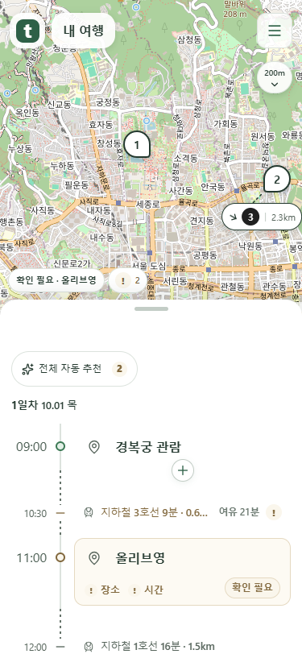
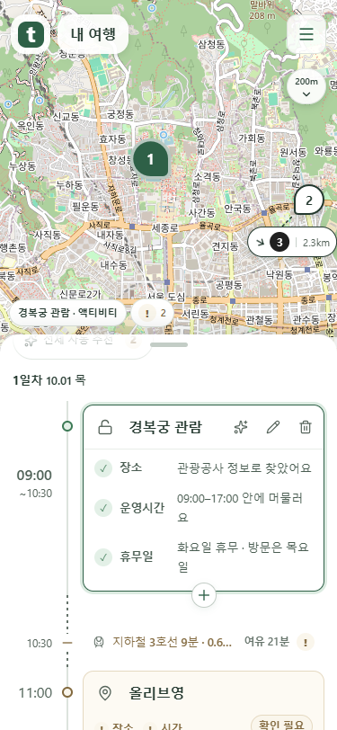
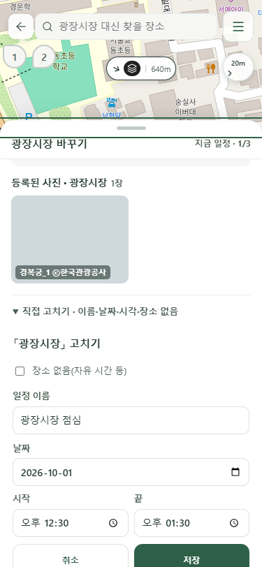
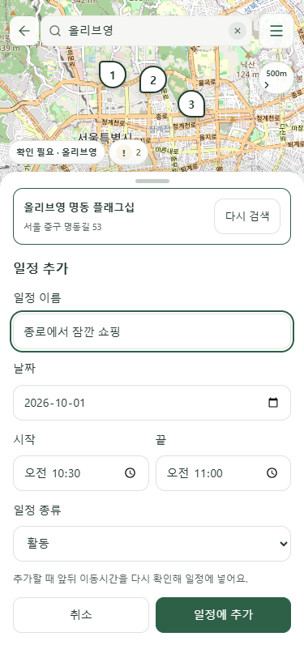

시각 조건·수정·추가 입력
실제 웹 코드와 mock 서버로 촬영했습니다. 공개 배포 상태를 나타내는 화면은 아닙니다.
일반 일정은 원래 위치
접힌 일반 일정의 시각은 목록과 함께 스크롤합니다. 검토 필요·되돌리기 가능 상태만 따라옵니다.

펼친 일정은 시각이 따라오기
상세를 펼친 일정의 시각은 해당 일정이 끝날 때까지 따라옵니다.

직접 수정의 중복 장소 입력 제거
장소는 상단에서 검색합니다. 일정 이름·날짜·시작·끝·장소 없음은 유지합니다.

장소 선택 후 입력으로 복귀
고른 장소를 표시하고 보존한 입력값으로 저장할 수 있습니다.
